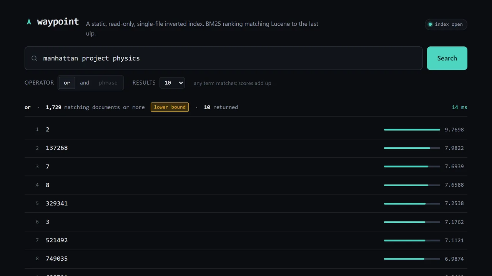
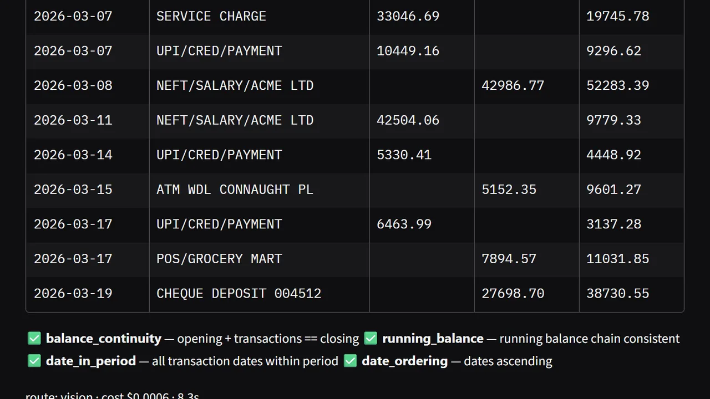
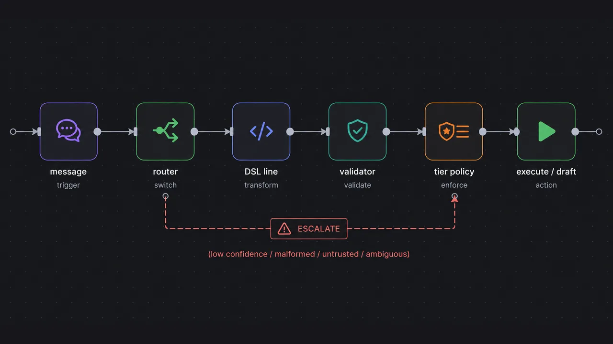

Parvez Ahmed
Software engineer at Northern Trust, based out of Bangalore.
Work
-
Reconciliation model
Clears the breaks the matching engine can’t.
21,000breaks cleared at 99.62% accuracy
-
Legacy-code RAG
Helps 20+ teams modernise decades-old AS/400 code.
5,000AS/400 programs and files in one knowledge graph
-
Payments pipeline
ISO 20022 in, CAMT.053 out.
50 sdown from 9 minutes
-
Platform upgrade
16 services from Java 8 to 21, with zero downtime.
800+CVEs closed
Experience
-
2026–now
Senior Analyst, Software Engineer
Northern TrustPromoted in under two years.
-
2026
Software Engineer, contract
CaptainSideBuilt the Discover recommendation engine.
-
2024–26
Analyst, Software Engineer
Northern TrustA report tool now used company-wide.
-
2023
Project intern
Northern TrustLighthouse scores up 25%.
-
2022–23
Project collaborator
Volkswagen Group New AcademyA decision system for 100+ dealerships.
-
2020–24
B.Tech, Computer Science
MIT World Peace UniversityCGPA 9.55 of 10.
Projects
-

Waypoint
A single-file search index, built to open fast.
3.3×faster first query than Lucene, same ranking
-

DocVal
Bank statements in, validated transactions out.
0.92F1 on synthetic, 0.42 on real scans
-
ReconMatch
Two ledgers in, explained matches out.
88.65%exact on held-out data, against 62.45% for the published reference
-

Inbox Firewall
How small can a model be and still be trusted with your inbox?
88.1%of 1,028 emails routed correctly by rules alone
Photographs


Say hello
126ahmedparvez@gmail.com
Back to morning